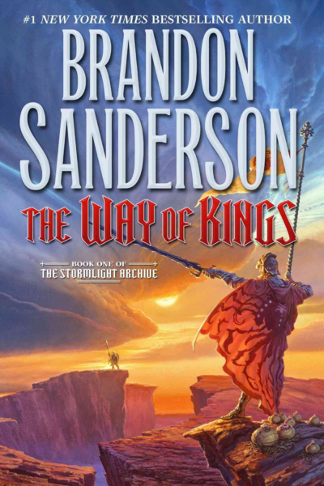
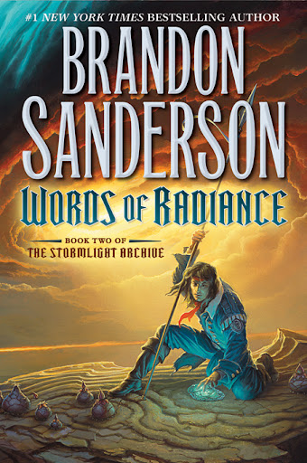
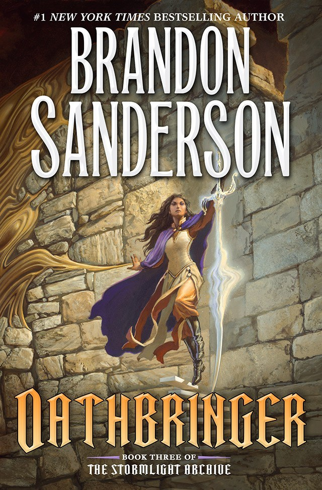
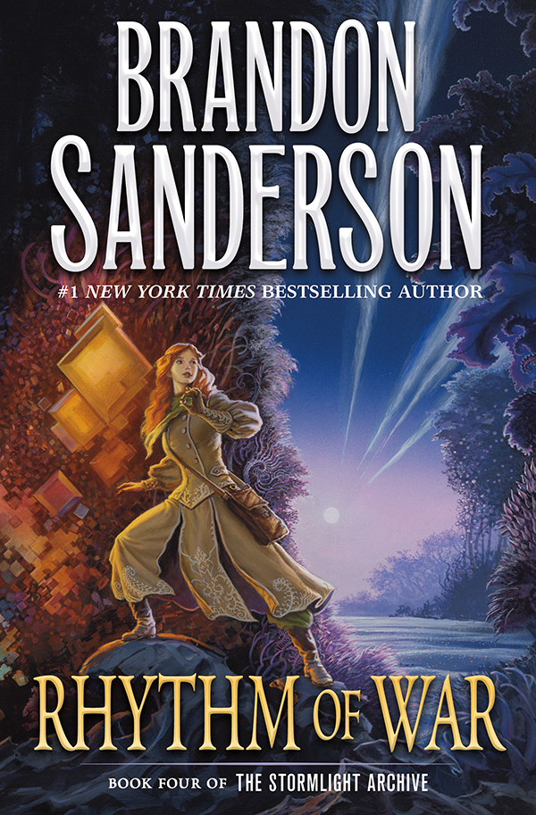
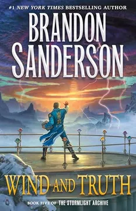

El camino de los Reyes, Libro Primero del Archivo de las Tormentas 
Palabras Radiante, Libro Segundo del Archivo de las Tormentas 
Juramentada, Libro Tercero del Archivo de las Tormentas 
El Ritmo de la Guerra, Libro Cuarto del Archivo de las Tormentas 
Viento y Verdad, Libro Quinto del Archivo de las Tormentas 
Las palabras más importantes que puede pronunciar un hombre son: «Lo haré mejor.» No son las palabras
más importantes que pueda pronunciar cualquier hombre.
Yo soy hombre, y son ellas las que necesitaba decir. El antiguo código de los Caballeros Radiantes reza:
«Viaje antes que destino.» Algunos lo consideran un simple lugar común, pero es mucho más.
Un viaje incluirá dolor y fracaso. No son solo los pasos adelante los que debemos aceptar, sino también
los traspiés. Las dificultades. El conocimiento de que fracasaremos...
-Dalinar Kholin, Refundador de los Caballeros Radiantes